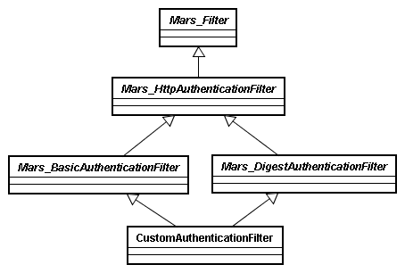
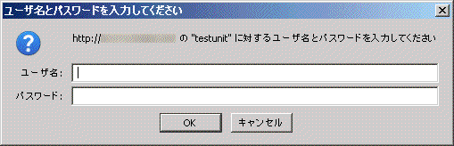

戻る
最終更新日: 2009 年 3 月31 日
認証フィルタの概念
delta には HTTP 認証 (Basic、Digest) を実装する機能がフィルタとして備わっています。
下図は認証フィルタの構成を表したクラス図です。
認証ロジックは Delta_BasicAuthenticationFilter、Delta_DigestAuthenticationFilter (抽象クラス) に組み込まれており、認証成功 (失敗) 後の処理はカスタムフィルタに定義する必要があります。

Basic 認証の実装
それでは実際に Basic 認証を実装するサンプルコードを見てみましょう。
はじめに Delta_BasicAuthenticationFilter を継承したカスタムフィルタを作成します。
- PHP Code# libs/filter/BasicAuthenticationFilter.php
class BasicAuthenticationFilter extends Delta_BasicAuthenticationFilter
{
// $username: 認証プロンプトから入力されたユーザ名
// $password: 認証プロンプトから入力されたパスワード
function authenticate($username, $password)
{
// 認証を許可するユーザリスト (username => password)
$users = array();
$users['foo'] = '100';
$users['bar'] = '200';
$users['baz'] = '300';
// 入力されたユーザ名、パスワードが $users 配列に存在するか
if (isset($users[$username]) && strcmp($users[$username], $password) === 0) {
// 認証成功
return TRUE;
}
// 認証失敗
return FALSE;
}
public function authenticateSuccess($chain)
{
// 認証成功時に実行する処理
// ...
parent::authenticateSuccess($chain);
}
public function authenticateFailure($chain)
{
// 認証失敗時に実行する処理
// $this->getMessages()->addError('Authentication failed!');
// $this->getController()->forward('AuthenticationError');
}
}
authenticate() メソッドは Delta_BasicAuthenticationFilter に定義されている抽象メソッドです。このメソッドは認証プロンプトから送信されたユーザ名、パスワードを引数として受け取り、認証に成功したか否かをブーリアン型で返すよう実装します。
その後に続く authenticateSuccess()、authenticateFailure() メソッドは Delta_HttpAuthenticationFilter に定義されたオプションメソッドですので、必要がなければオーバーライドする必要はありません。
次に特定モジュールで認証フィルタが適用されるよう設定ファイルにルールを追加します。
- YAML Code# modules/{module}/filters.yml
basicAuthenticationFilter:
clsas: BasicAuthenticationFilter
# 特定パッケージのみ認証フィルタを適用させる場合
# packages:
# - /auth
最後に認証対象となるアクションを作成しましょう。
- PHP Code# modules/{module}/actions/AuthenticationAction.php
class AuthenticationAction extends Delta_Action
{
public function execute()
{
echo 'Authentication success!';
return Delta_View::NONE;
}
}
ブラウザ経由で対象アクションを起動すると、次のような認証ダイアログが開きます。

ユーザ名に "foo"、パスワードに "100" を入れることで Basic 認証を通過し、画面には "Authentication success!" の文字列が出力されます。
Digest 認証の実装
Digest 認証の実装は、Basic 認証の時とほぼ同じです。
初めに Delta_DigestAuthenticationFilter を親とする実装クラスを作成しましょう。
- PHP Code# libs/filter/DigestAuthenticationFilter.php
class DigestAuthenticationFilter extends Delta_DigestAuthenticationFilter
{
// $username: 認証プロンプトから入力されたユーザ名
function getPassword($username)
{
// 認証を許可するユーザリスト (username => password)
$users = array();
$users['foo'] = '100';
$users['bar'] = '200';
$users['baz'] = '300';
// リクエストされたユーザ名が存在するかチェック
if (isset($users[$username])) {
// ユーザ名に対応するパスワードを返す
return $users[$username];
}
// 存在しない場合は認証失敗
return FALSE;
}
getPassword() メソッドは、Delta_DigestAuthenticationFilter に定義された抽象メソッドです。このメソッドは認証ダイアログから送信されたユーザ名を引数に取り、ユーザ名に対応するパスワードを返すよう実装します。Basic 認証の時とは認証実装メソッドが異なるので注意して下さい。
次にフィルタ適用ルールを定義します。
- YAML Code# modules/{module}/filters.yml
digestAuthenticationFilter:
clsas: DigestAuthenticationFilter
# 特定パッケージのみ認証フィルタを適用させる場合
# packages:
# - /auth
最後に認証対象となるアクションを作成すれば完了です。
- PHP Code# modules/{module}/actions/AuthenticationAction.php
class AuthenticationAction extends Delta_Action
{
public function execute()
{
echo 'Authentication success!';
return Delta_View::NONE;
}
}